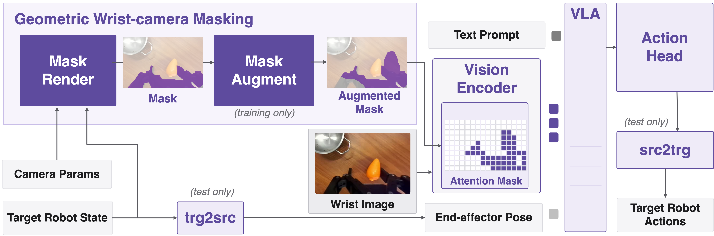

TL;DR: Mask the gripper out of the vision encoder's attention, and a VLA trained on one gripper controls unseen end-effectors zero-shot.
We present Cloak, a training recipe that endows a vision-language-action (VLA) model with zero-shot cross-embodiment transfer by cloaking the end-effector from its own wrist camera. We leverage the robot's known geometry to circumvent the need for segmentation models or generative models for inpainting. The mask is rendered in simulation using the robot's geometry and wrist camera calibration, projected into the wrist view in real time, and augmented during training so the policy does not overfit to one end-effector geometry. At inference, we mask an unseen end-effector the same way, and retarget its state and actions through two frames, such as two gripper jaws or two fingertips, with inverse kinematics. We demonstrate the recipe with Cloak-VLA, a Vision-Language-Action model trained with Cloak on a single-embodiment parallel-jaw gripper dataset. Without new data or retraining, Cloak-VLA transfers zero-shot to various unseen end-effectors, from another gripper to a five-fingered dexterous hand, while preserving the source embodiment's performance.

Reaching a new end-effector zero-shot is hard because of both a visual gap — the end-effector's appearance in its own wrist camera — and a kinematic gap. The kinematic gap has a structured, geometric character that inverse kinematics can overcome; the visual gap is the binding constraint, since a perception stack trained on one embodiment bakes its appearance into its features. Cloak addresses both.
Embodiment mask. Using the robot's link meshes, its proprioceptive state, and the wrist camera's calibration, we render the end-effector's silhouette in simulation via forward kinematics and project it into the wrist view, yielding a binary embodiment mask in real time — no segmentation model and no generative inpainting.
Mask augmentation (training only). We randomize the mask shape during training by unioning random capsules onto its contour and subtracting random disks from its interior, so the policy never overfits to one fixed gripper silhouette. We fill the masked region with a rolled copy of the same image so the augmentation never reveals the source embodiment.
Masked attention in the vision encoder. The mask is downsampled to the ViT's patch grid and used to bias self-attention so no query reads from a masked patch — equivalent to dropping the end-effector tokens at constant sequence length, gating them out of the downstream cross-modal attention with the language and state.
Tip-pose retargeting. Cloak-VLA's inputs and outputs stay in the source robot's joint space. To deploy on an unseen embodiment, we designate two tips on each embodiment (e.g. two gripper jaws, or two fingertips) and bridge the action spaces with forward and inverse kinematics, mapping the target state to the source input and the source action output back to the target.
Cloak-VLA is trained only on the Robotiq 2F-85 source gripper from DROID, then deployed zero-shot — with no new data and no retraining — on an unseen UMI gripper and an unseen Sharpa five-fingered hand, all on the same Franka arm.
@misc{piseno2026cloak,
title = {Cloak: Zero-Shot Cross-Embodiment Manipulation by Masking the End-Effector from the VLA},
author = {Piseno, Michael and Tevet, Guy and Liu, C. Karen},
year = {2026},
eprint = {XXXX.XXXXX},
archivePrefix = {arXiv},
primaryClass = {cs.RO}
}